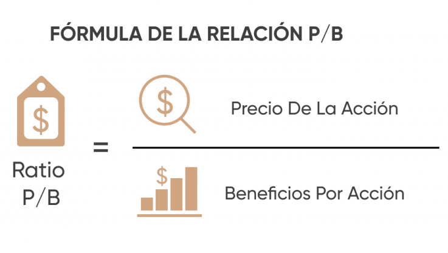

¿Qué estrategia utilizamos?
La inversión en acciones de valor es una estrategia destinada a eliminar los impulsos temporales y los factores emocionales que a menudo engañan a los inversores, y en su lugar se centra en la búsqueda del valor subyacente o intrínseco.
Las empresas favoritas de los inversores en valor son las que tienen una sólida posición en el mercado, protección frente a la competencia, un equipo directivo competente y estable, y una mínima dependencia de la deuda y del entusiasmo para cumplir sus objetivos empresariales y producir valor.
Inversión en valor: métricas clave
A continuación, se presentan algunas de las métricas clave que pueden ayudar a los inversores a encontrar las acciones de valor en las que invertir.
Aunque ninguna de estas medidas proporciona una imagen absoluta del valor relativo de una empresa, pueden ayudar a orientar a los inversores hacia empresas con un perfil de beneficios y un precio relativo de las acciones que resulten atractivos bajo un marco de inversión en valor y evaluar si están infravaloradas o sobrevaloradas.
Relación precio/beneficio (P/B)
El precio de los llamados valores de alto rendimiento suele estar menos correlacionado con los ingresos de base de la empresa. En el caso de las acciones de valor, los inversores buscan una relación más estrecha entre los ingresos de una empresa y el precio de sus acciones.
